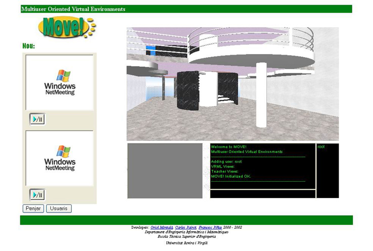
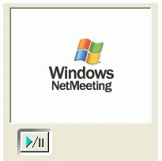
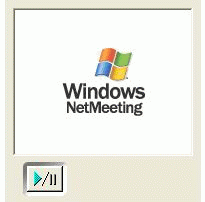

3.12 Netmeeting
La Tool Netmeeting utilitza les propietats de components ActiveX que ofereix el Windows NetMeeting de Microsoft per tal de permetre videoconfer�ncia entre usuaris d'un mateix Place dins el MOVE!.
Si el nostre rol t� perm�s d'utilitzaci� d'aquesta Tool dins un determinat World, i a m�s la hem activat per tal de poder-la usar dins un determinat Place, veurem que, quan entrem a l'entorn 3D del Place, aquesta apareixer� en el marge esquerra de la pantalla:

Com podem veure la Tool consta de les seg�ents parts:

Pantalla de video remot. En ella podrem veure el video que estem rebent de l'usuari amb el que estem mantenint la videoconfer�ncia

Pantalla de video local. En ella apareixer� el v�deo que estem enviant a l'altre usuari
Mostra la seg�ent finestra, la qual cont� una llista de tots els usuaris que hi ha actualment en el Place:

- Usuari: login que identifica a l'usuari
- Nom: nom de l'usuari
- Cognoms: cognoms de l'usuari
- IP: direcci� IP de la m�quina de l'usuari
Intenta establir una connexi� entre l'usuari remot i nosaltres